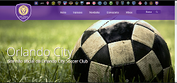
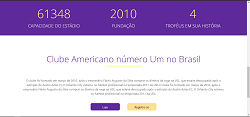
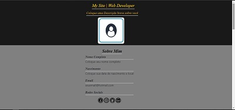
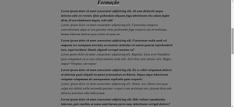
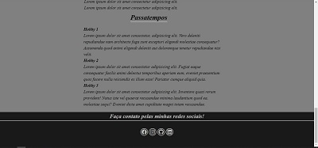

Ivan Lott | Web Developer
Um Curriculum Vitae em forma de site, criado por mim.
Um pouco sobre mim

Graduação
- Atualmente cursando 2° período de Redes de Computadores na Estácio FASE, em Aracaju/SE.
- Cursei o 1º período de Análise e Desenvolvimento de Sistemas na Estácio de Sá-Prado em Belo Horizonte/MG, porém por motivos financeiros retornei a Aracaju/SE.
- Cursei de Engenharia Civil na UNIT, em Aracaju/SE, porém não era um curso que eu me identificava e decidi mudar o foco de minha faculdade para T.I.
- Me formei no Pio Décimo, em Aracaju/SE, onde logo ingressei na faculdade de Engenharia Civil.
Formação Profissional
- Strata Engenharia - 13/02/2021 a atual data; Atualmente trabalhando na área de Engenharia Civil pois visei um aumento salarial para que pudesse retornar a faculdade.
- Tok Stok - 15/06/2018 até 28/11/2020; Iniciei como auxiliar de estoque e fui promovido 2 vezes em menos de 1 ano, onde cheguei a ser Operador Geral da loja, respondendo apenas aos supervisores e gerentes.
- Consol Engenheiros e Consultores - 05/02/2014 até 13/05/2015; Trabalhei nessa empresa quando estava cursando engenharia civil para que agregasse valor e conhecimento ao meu curso.
- Secretaria de Segurança Pública de Sergipe (Estágio) - 2010 até 2012; Enquanto estava no ensino médio, trabalhava meio período, cuidando diretamente da área admnistrativa do Setor de Pagamentos da SSP/SE.
Cursos
- Curso Completo do Desenvolvedor Web pela Udemy (HTML5, CSS3, JavaScript)
- Curso HTML/CSS pela Codecademy
- Curso de JavaScript pela Codecademy
- Inglês Intermediário
Hobby
- Música Desde pequeno sempre tive grandes influências na família nessa parte, onde sempre tive alguém que era envolvido profissionalmente com música.
- Surf O estilo de vida que o surf te proporciona é algo indescritível. Estar em contato direto com a natureza é sempre gratificante, fora que os ensinamentos que aprendo com a cultura do surf que me engrandesce na vida pessoal e profissional.
- Games Um bom e velho RPG, já joguei em muitas rodas de RPG, hoje fico mais no World of Warcraft, que é um mundo muito fascinante para ser explorado.
- Família Um ponto importante na vida, estar com a família é algo que devemos aproveitar cada momento, e eu particularmente, adoro.
Meu Portifólio




